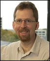
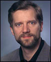
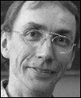

| KEYNOTES | ||
| Uri Alon, 2004 ISCB Overton Prize Winner; Senior Scientist, Weizmann Institute of Science | ||
| | Uri Alon did his PhD in theoretical physics at the Weizmann Institute, on statistical mechanics and hydrodynamics. He switched to experimental biology during his postdoc at Princeton, studying robustness in bacterial chemotaxis. Since 2000, his lab at Weizmann studies gene regulation networks experimentally and theoretically, using E. coli and mammalian cell-lines as model systems. His research employs accurate, high temporal-resolution measurement of gene expression from living cells and mathematical modelling to discover the design principles of biological networks. This led to the definition of 'network motifs', recurring circuit patterns in biological networks, and experimental demonstration of their information-processing functions. | |
| Eric Green, National Human Genome Research Institute, Bethesda, MD, USA | ||
|  | Eric Green received his M.D. and Ph.D. in 1987 from Washington University, after which he pursued residency training in clinical pathology and postdoctoral training in genomics at the same institution. In 1992, he was appointed assistant professor of pathology and genetics at Washington University. In 1994, he moved to the Intramural Program of the National Human Genome Research Institute (NHGRI) at the National Institutes of Health. In addition to his role as Chief of the Genome Technology Branch and Director of the NIH Intramural Sequencing Center, Dr. Green was appointed to the position of Scientific Director of NHGRI in 2002. | |
| Leroy Hood, President, Institute for Systems Biology, Seattle, WA, USA | ||
| | Dr. Hood’s research has focused on the study of molecular immunology, biotechnology, and genomics. His professional career began at Caltech where he and his colleagues pioneered four instruments—the DNA gene sequencer and synthesizer, and the protein synthesizer and sequence—which comprise the technological foundation for contemporary molecular biology. In particular, the DNA sequencer has revolutionized genomics by allowing the rapid automated sequencing of DNA, which played a crucial role in contributing to the successful mapping of the human genome during the 1990s. In 1992, Dr. Hood moved to the University of Washington as founder and Chairman of the cross-disciplinary Department of Molecular Biotechnology. In 2000, he co-founded the Institute for Systems Biology in Seattle, Washington to pioneer systems approaches to biology and medicine. Most recently, Dr. Hood's lifelong contributions to biotechnology have earned him the prestigious 2003 Lemelson–MIT Prize for Innovation and Invention. He was also awarded the 2002 Kyoto Prize in Advanced Technology and the 1987 Lasker Prize for his studies on the mechanism of immune diversity. He has published more than 500 peer-reviewed papers, received 12 patents, and has co-authored textbooks in biochemistry, immunology, molecular biology, and genetics, and is a member of the National Academy of Sciences, the American Philosophical Society, the American Association of Arts and Sciences, and the Institute of Medicine. Dr. Hood has also played a role in founding numerous biotechnology companies, including Amgen, Applied Biosystems, Systemix, Darwin and Rosetta. | |
| David Lipman, 2004 ISCB Senior Scientist Accomplishment Award Winner; Director, National Center for Biotechnology Information (NCBI) | ||
 | Dr. David Lipman is currently the Director of the National Center for Biotechnology Information (NCBI), which is a division of the National Library of Medicine within the National Institutes of Health. NCBI was created by Congress in 1988 to do basic research in computational biology, and to develop computational tools, databases and information systems for molecular biology. After medical training, Dr. Lipman joined the Mathematical Research Branch of the National Institute of Diabetes, Digestive, and Kidney Diseases (NIDDK) as a Research Fellow. In his research on computational tools, he developed the most widely used methods for searching biological sequence databases. There are thousands of citations to Dr. Lipman’s methods in papers which have used them to discover biological functions for unknown sequences and which have thereby advanced the understanding of the molecular basis of human disease. Since 1989, Dr. Lipman has been the Director of the NCBI, a leading research center in computational biology, the creators of PubMed, and one of the most heavily used sites in the world for the search and retrieval of biomedical information. | |
| Matthias Mann, University of Southern Denmark, Odense, Denmark | ||
|  | Matthias Mann is a pioneer of mass spectrometric methods in proteomics. He was on the team that originally developed electrospray mass spectrometry at Yale University, an achievement that gained a share of the Nobel Prize in Chemistry in 2002 for John Fenn. Dr Mann originally studied Mathematics and Physics and was a group leader at the European Molecular Biology Laboratory in Heidelberg before becoming full professor in bioinformatics at the University of Southern Denmark in Odense. His research group is further developing proteomic technology, in particular tools for interaction analysis by quantitative methods. His laboratory recently described Stable Isotope Labeling by Amino acids in Cell culture (SILAC) as key advance in quantitative proteomics. Recent reports by the group in organellar proteomics include characterization of the human centrosome, the mitochondrion and the nucleolus. The group has also used quantitative proteomics to determine the dynamics of human signalling pathways. | |
| Denis Noble, CBE FRS FRCP (Hon), University of Oxford, UK | ||
| | Denis Noble is the Burdon Sanderson Professor of Cardiovascular Physiology at Oxford University, a Chair financed by British Heart Foundation. His research is focussed on using computer models of biological organs and systems to interpret function through from the molecular to the whole body levels. With its international collaborators, this team has used supercomputers to create the first virtual organ, the virtual heart. As Secretary-General of IUPS, he played a major role in launching the Human Physiome Project, an international project to use computer simulations to create the quantitative physiological models necessary to interpret the genome. | |
| Svante Pääbo, Max Planck Institute for Evolutionary Anthropology, Leipzig, Germany | ||
|  | Svante Paabo was born in 1955 in Stockholm, Sweden. He studies Egyptology, History of Science and Medicine at the University of Uppsala where he obtained a PhD in molecular immunology. As a graduate student he began experimenting with the extraction and cloning of DNA from ancient Egyptian mummies. As a postdoctoral fellow at UC Berkeley he applied PCR to the retrieval of DNA sequences from archaeological remains, and with this founded the field of molecular archaeology. The techniques developed since by Dr Paabo's group have been used to study specimens in zoological collections as well as the phylogeny and population genetics of extinct organisms. Svante Paabo is a cofounder of the interdisciplinary Max Planck Institute for Evolutionary Anthropology in Leipzig, Germany, which unites approaches from the natural and social sciences on questions concerning the evolutionary origins and unique abilities of humans. His most recent work focuses on genomic comparisons of humans and apes, for example in terms of gene expression patterns in the brain and the genetic changes that may underlie the human ability for articulate speech. | |
| Anna Tramontano, University of Rome "La Sapienza", Rome, Italy | ||
| | Anna Tramontano was trained as a physicist but she soon became fascinated by the complexity of biology and by the promises of computational biology. She worked at the Department of Biochemistry and Biophysics of UCSF where she collaborated in the development of the very popular molecular graphics software Insight. Later she was a staff scientist in the Biocomputing Programme of the EMBL, where she studied the sequence structure relationship in immunoglobulin molecules. In 1990 she moved back to Italy in the Merck Research Laboratories near Rome, where she was involved in protein structure modeling and design, and in drug and vaccine discovery and development. She recently returned to the academic world and is now Chair Professor of Biochemistry in "La Sapienza" University in Rome where she continues to pursue her scientific interests on protein structure prediction and analysis. | |